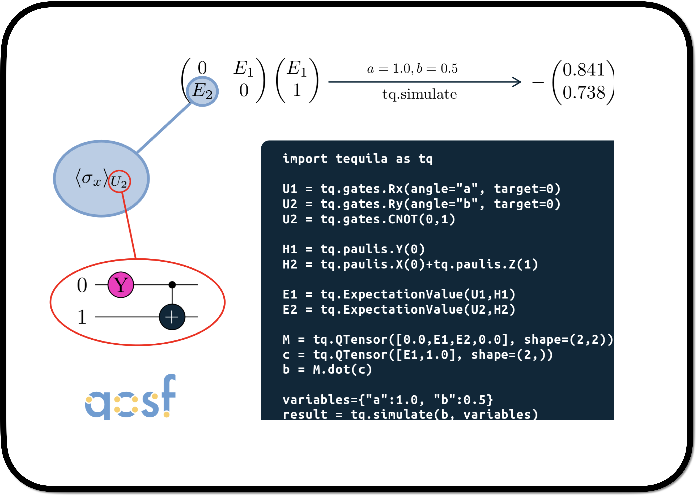

This tutorial introduces you to the QTensor class using which you can form vectors, matrices, or tensors whose elements are tequila objectives. This class is derived from numpy.ndarray and therefore, all operations that can be performed on an ndarray object can be performed on a QTensor object.
A short tutorial on using QTensor class

First, let’s take a look at the available simulators:
Code
import tequila as tqfrom tequila import numpyfrom numpy import pitq.show_available_simulators()
In the above example, we first initialized a QTensor of shape (3,1). Then, we assigned a tequila objective to each element of the QTensor. Another way of initializing a QTensor is by providing it an objective list (using objective_list) and a shape as follows.
Caution: The elements of objctive_list must be tequila objectives!
To view the details of the QTensor, we can use print(<QTensor_name>):
Code
print('V1:',V1)print('\n')print('V1_:',V1_)
V1: QTensor of shape (3,) with 3 unique expectation values
total measurements = 3
variables = [a, b]
types = not compiled
V1_: QTensor of shape (3,) with 3 unique expectation values
total measurements = 3
variables = [a, b]
types = not compiled
Similarly, we can create matrices and tensors. Note that it is not necessary that the tensor element is a single expectation value. See the following example:
QTensor of shape (2, 2) with 5 unique expectation values
total measurements = 5
variables = [a, b]
types = [<class 'tequila.simulators.simulator_qulacs.BackendExpectationValueQulacs'>]
[[0.70710678 0.8660254 ]
[0.70710678 1. ]]
Applying transformations on QTensors
We can apply any operation to the QTensor like we apply to a tequila objective. In the case of QTensors, the function/operation is applied element-wise. For instance
V5 = V1.apply(numpy.exp)
Code
print(V5)print(tq.simulate(V5,variables))
QTensor of shape (3,) with 3 unique expectation values
total measurements = 3
variables = [a, b]
types = not compiled
[2.02811498 0.49306869 2.62721888]
However, there is one exception that we found. The tensordot method returns an ndarray rather than a QTensor when acting on QTensor objects. If such an issue occurs, recast as follows: